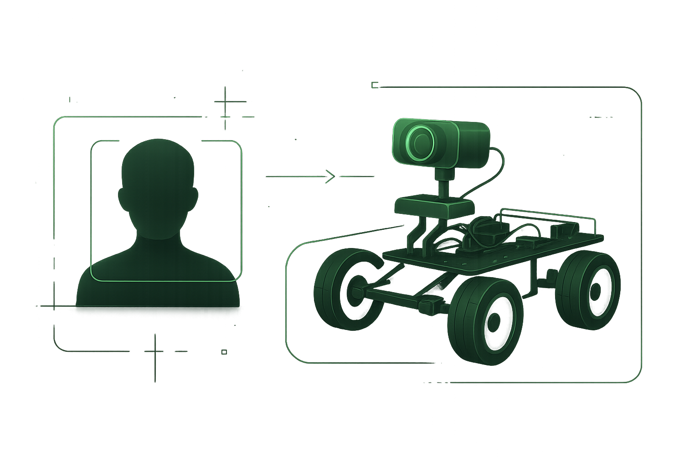

Advanced
Face Following Robot (Distance Estimation)
Camera-only mobile robot tracking a target face, estimating distance for movement with wireless Python ↔ Arduino RF24 control. Real-world perception, estimation, and robotics actuation.